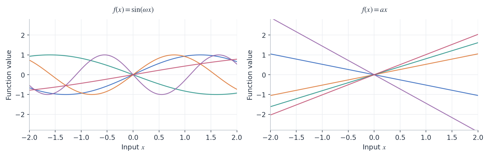
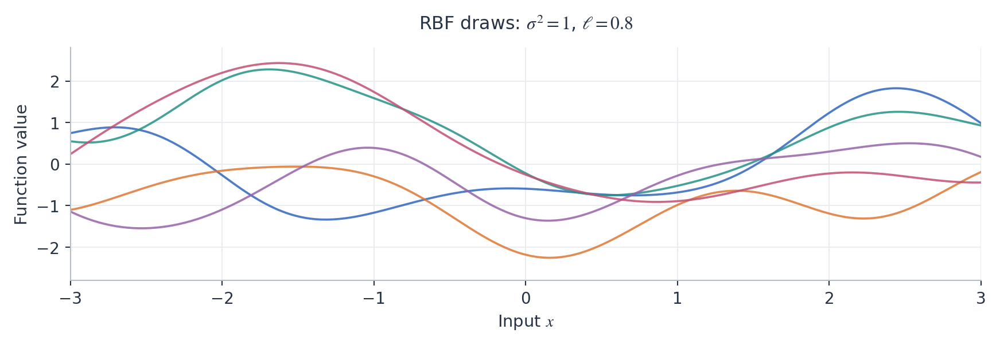
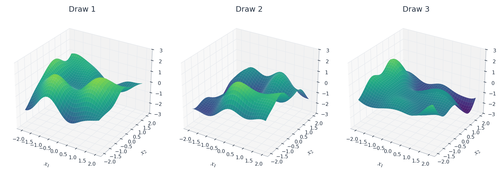
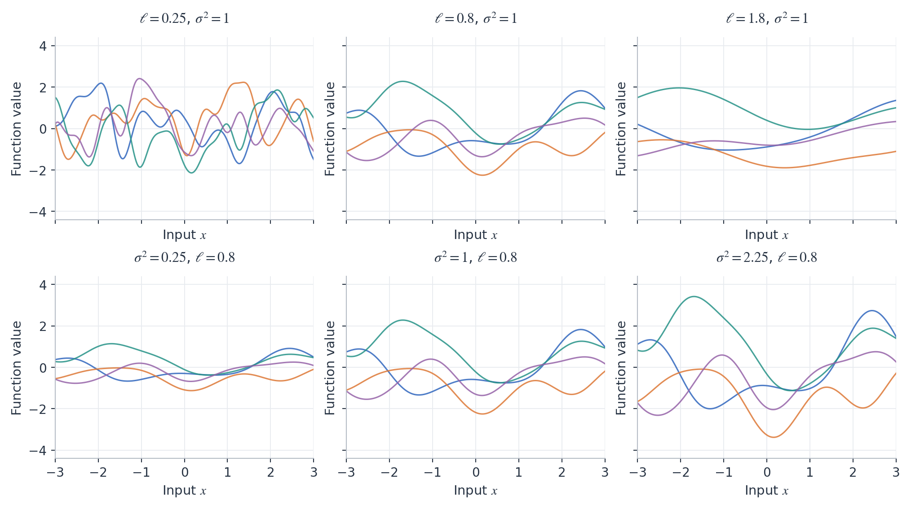
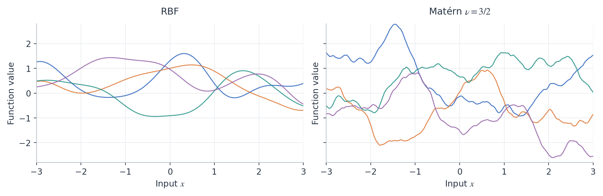
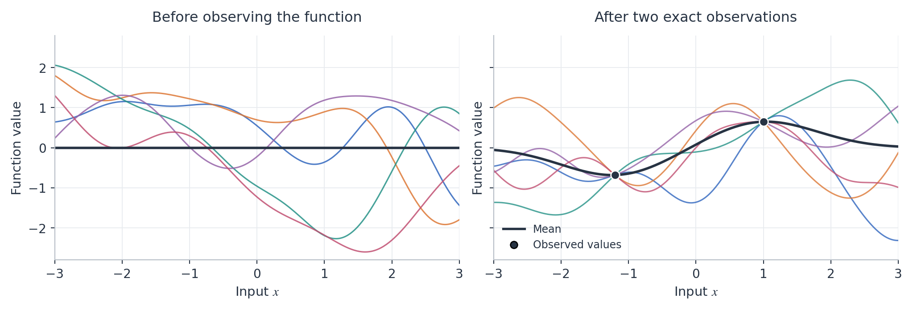
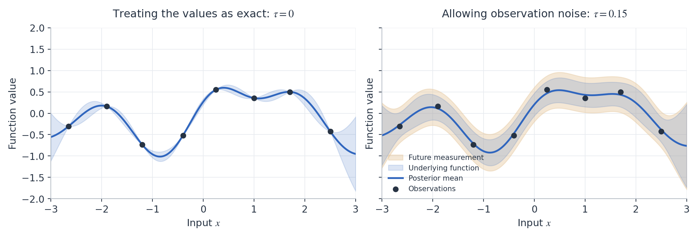
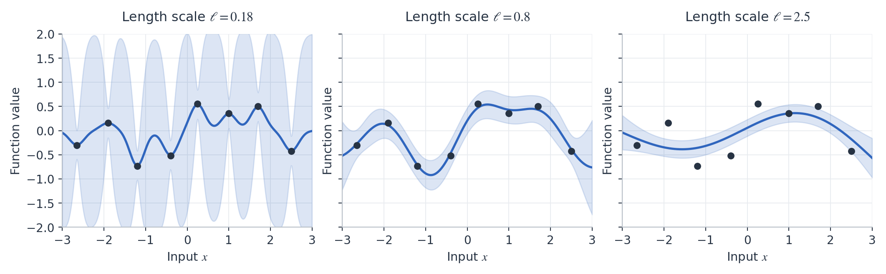

These are some introduction notes to Gaussian Processes (GPs) for the optimization class DSA4212. I present the bare essentials needed to understand their use since GPs will be used extensively in the Bayesian Optimization chapter.
Random functions
Let’s start with a random function. For example, the following example was proposed in class: draw a frequency \(\omega\) uniformly from \([-\pi,\pi]\) and set
\[ f(x)=\sin(\omega x),\qquad x\in\mathbb{R}. \]
Once \(\omega\) has been sampled, the value of \(f\) is determined at every input \(x\). Drawing another frequency gives another function: this defines a probability distribution over functions and the function values at different locations are related since the same draw of \(\omega\) determines all of them. For example, every function in this family passes through zero and satisfies \(f(-x)=-f(x)\).
Gaussian processes
A Gaussian process (GP) is a random function \(f\) such that, for any finite collection of inputs \(x_1,\ldots,x_n\), the vector
\[ \bigl(f(x_1),\ldots,f(x_n)\bigr) \]
has a joint Gaussian distribution. In particular, each individual value \(f(x)\) must be Gaussianly distributed. Note that the requirement on the joint distributions is much stronger than requiring Gaussian marginals alone. Our previous sine example indeed does not work: \(f(1)=\sin(\omega)\) is random, nonconstant, and bounded between \(-1\) and \(1\), so it cannot be Gaussian. In class, a student suggested another example:
\[ f(x)=a \, x,\qquad a\sim\mathcal{N}(0,1). \]
This works as a GP! Indeed, one can readily check that the vector \((f(x_1),\ldots,f(x_n))=a(x_1,\ldots,x_n)\) is jointly Gaussian and we did this small calculation in class. In that example, every draw is a straight line with a random slope.

Knowing one nonzero-input value of the random line determines its slope and hence the entire function. Its values at several inputs are therefore strongly constrained, and their covariance matrix is singular when there is more than one input.
Mean functions and covariance kernels
The mean function \(m\) and covariance kernel \(k\) of a random function are defined by
\[ \begin{aligned} m(x)&=\mathbb{E}[f(x)],\\ k(x,x')&=\mathop{\mathrm{Cov}}\bigl(f(x),f(x')\bigr). \end{aligned} \]
The value \(m(x)\) is the average of the function values at \(x\) over repeated draws. The diagonal \(k(x,x)=\mathop{\mathrm{Var}}(f(x))\) describes their spread, while \(k(x,x')\) describes how the values at \(x\) and \(x'\) vary together. For the random line example, \(\mathbb{E}[a]=0\) and \(\mathbb{E}[a^2]=1\) give
\[ m(x)=0,\qquad k(x_1,x_2)=x_1 \, x_2. \]
More generally, fix \(p \geq 1\) deterministic functions \(\varphi_1,\ldots,\varphi_p\), often called basis functions, and consider the random function defined by
\[ f(x)=\sum_{j=1}^p a_j\varphi_j(x)=\varphi(x)^\top a, \qquad a\sim\mathcal{N}(\mu,\Sigma), \]
where \(\varphi(x)=(\varphi_1(x),\ldots,\varphi_p(x))^\top\) and \(\mu\in\mathbb{R}^p\), \(\Sigma\in\mathbb{R}^{p\times p}\) are the mean and covariance of the coefficients. A standard choice is \(\mu=0\) and \(\Sigma=I_p\). Every finite vector of function values is again a linear transformation of the gaussian vector \(a \in \mathbb{R}^p\), and one readily checks that it is jointly Gaussian with:
\[ m(x)=\varphi(x)^\top\mu, \qquad k(x,x')=\varphi(x)^\top\Sigma\varphi(x'). \]
For example, independent standard Gaussian coefficients in \(f(x)=a_0+a_1x+a_2x^2\) give random quadratic polynomials with \(m(x)=0\) and \(k(x,x')=1+xx'+x^2{x'}^2\).
Drawing functions from a kernel
A Gaussian vector is determined by its mean and covariance. While above we have been constructing GPs from random coefficients and basis functions, it is usually customary to specify a GP directly via its mean function and covariance kernel. If the mean and covariance functions are given, it is straightforward to simulate the function values at any finite collection of inputs. For locations \(X=(x_1,\ldots,x_n)\), define the associated mean vector \(m_X\in\mathbb{R}^n\) and covariance matrix \(K_X\in\mathbb{R}^{n\times n}\) by
\[ (m_X)_i=m(x_i),\qquad (K_X)_{ij}=k(x_i,x_j). \]
By definition, the associated GP values at the locations \(X\) form a Gaussian vector, so \(f_X=(f(x_1),\ldots,f(x_n))^\top\) then satisfy
\[ f_X\sim\mathcal{N}(m_X,K_X). \tag{1}\]
Note that, indeed, the kernel function \(k(x,x')\) must be symmetric and give a positive semidefinite matrix \(K_X\) for every choice of locations – this means that not all functions \(k(x,x')\) are valid covariance kernels. These conditions ensure that the prescribed covariance matrices are valid. We write \(f\sim\mathrm{GP}(m,k)\) for the resulting Gaussian process.
A very common choice is the radial basis function (RBF), also called the squared-exponential kernel:
\[ k(x,x')=\sigma^2\exp\left(-\frac{\|x-x'\|^2}{2\ell^2}\right), \qquad \sigma^2>0,\quad \ell>0. \tag{2}\]
Take \(m(x)=0\) for now. How can we generate and plot a function when we have specified only this kernel? In one dimension, choose a fine grid over an interval, construct \(m_X\) and \(K_X\), and generate a Gaussian vector as in Equation 1. Connecting its coordinates gives a discretized draw of the function. For example, for the RBF kernel with zero mean, this produces smooth random curves as shown in Figure 2.
For the multivariate Gaussian computations in this course, we will use SciPy. Once the grid mean m_X and covariance matrix K_X have been constructed, five draws require only:
from scipy.stats import multivariate_normal
draws = multivariate_normal(m_X, K_X, allow_singular=True).rvs(size=5)Each row of draws contains the values of one function on the grid.

For an RBF kernel, nearby values are highly correlated, and connecting the jointly sampled points produces smooth curves. The same computation works for functions on \(\mathbb{R}^2\). Choose a two-dimensional grid, list its locations as \(x_1,\ldots,x_n\in\mathbb{R}^2\), and use their Euclidean distances in Equation 2. The covariance matrix still has size \(n\times n\); the resulting Gaussian vector can be reshaped and plotted as a surface.

Length scales and smoothness
The RBF kernel has two parameters with different effects. Since \(\sqrt{k(x,x)}=\sigma\), the parameter \(\sigma\) is the marginal standard deviation of the function. Increasing it produces a larger vertical spread of function values. The length scale \(\ell\) describes how quickly the correlation decreases with distance. At distance \(\ell\), the correlation is \(e^{-1/2} \approx 61\%\); at distances much larger than \(\ell\), it is close to zero so that function values are nearly uncorrelated. A small length scale allows rapid changes over short distances. A large length scale produces functions that vary more slowly across the same interval.

Changing the RBF length scale does not change its differentiability properties: even a rapidly varying RBF draw is very smooth. The Matérn family allows less smooth functions, with an additional parameter \(\nu\) controlling their regularity, which can be very useful for more robust modeling of functions with unknown smoothness. Two common choices are \(\nu=3/2\) and \(\nu=5/2\); the latter gives smoother functions. The parameters \(\sigma^2\) and \(\ell\) retain their roles as marginal variance and length scale.

For an unknown objective in an optimization problem, assuming the regularity of an RBF process can be stronger than we wish and for this reason, Matérn kernels with finite smoothness are often preferred when used within Bayesian optimization.
Conditioning on observations
Suppose we now know two values of the function. We would like to draw functions that agree with these observations. Conditioning a jointly Gaussian vector gives another Gaussian vector, so conditioning a GP on observed function values gives another GP. Its updated mean function \(m_y\) and covariance kernel \(k_y\) describe the functions compatible with the observations. The process before observing the data is called the prior, and the conditional process is called the posterior.

In Figure 6, all posterior draws pass through the two observed values, while still differing elsewhere. The kernel determines how information about an observed value extends to other locations. For the RBF kernel, this influence decreases as the distance becomes large relative to \(\ell\).
The Gaussian conditioning formula
For jointly Gaussian vectors \(U\in\mathbb{R}^p\) and \(V\in\mathbb{R}^q\), write their means as \(\mu_U,\mu_V\) and covariance blocks as \(\Sigma_{UU},\Sigma_{VV},\Sigma_{UV}=\Sigma_{VU}^\top\). If \(\Sigma_{VV}\) is invertible, the conditional distribution of \(U\) given \(V=v\) is Gaussian with
\[ \begin{aligned} \mathbb{E}[U\mid V=v] &=\mu_U+\Sigma_{UV}\Sigma_{VV}^{-1}(v-\mu_V),\\ \mathop{\mathrm{Cov}}(U\mid V=v) &=\Sigma_{UU}-\Sigma_{UV}\Sigma_{VV}^{-1}\Sigma_{VU}. \end{aligned} \tag{3}\]
For GP regression, we will use scikit-learn’s GaussianProcessRegressor and its RBF kernel. Here X_obs contains the observed inputs, y_obs their values, and X_grid the inputs where we want predictions. Input arrays have one row per location: for scalar inputs, their shapes are (n, 1) and (n_grid, 1). This is because the scipy library is quite general and the second argument is the dimensionality of the input space, which in this case is 1. The values y_obs form a one-dimensional array of length n. With zero prior mean, marginal variance one, and length scale \(0.8\):
# define the GP with RBF kernel and zero observation noise
# optimizer=None keeps the kernel parameters fixed during fitting
gp = GaussianProcessRegressor(
kernel=RBF(0.8),
alpha=0,
optimizer=None)
# condition the GP on the observed data
gp.fit(X_obs, y_obs)
# extract posterior mean & variance
mean, std = gp.predict(X_grid, return_std=True)
variance = std**2
# generate samples from the posterior
draws = gp.sample_y(X_grid, n_samples=5)The call to fit conditions the GP on the observations. Setting optimizer=None keeps the kernel parameters fixed during this computation. The arrays mean and variance give the posterior mean and variance at each grid point, while each column of draws is a posterior function on the grid. Use return_cov=True instead of return_std=True if the full posterior covariance matrix is needed.
Noisy observations
Often we observe a noisy version of the function value:
\[ y_i=f(x_i)+\varepsilon_i, \qquad \varepsilon_i\sim\mathcal{N}(0,\tau^2), \tag{4}\]
where the noise terms are independent of each other and of the function. For example, in Bayesian Optimization, the observed objective values may include measurement noise, as is almost always the case for example when evaluating real-world experiments or simulations. The parameter \(\tau^2\) describes this observation noise; \(\sigma^2\) in the kernel describes the prior variation of the underlying function.
The observation vector now has covariance \(K_X+\tau^2I\). We can still condition using Gaussian formulas, but we no longer know the exact function values at the observed inputs. The posterior mean and draws therefore need not interpolate the observations. In Figure 7, the same eight observed values are treated either as exact measurements or as measurements with noise standard deviation \(\tau=0.15\).

In the code, specify the observation-noise variance through alpha:
gp = GaussianProcessRegressor(
kernel=RBF(0.8),
alpha=tau**2,
optimizer=None,
)
gp.fit(X_obs, y_obs)The same predict and sample_y calls now give predictions and draws conditional on the noisy data. Setting \(\tau=0\) recovers exact conditioning.
The variance obtained from std**2 describes uncertainty about the underlying function. For a new noisy measurement \(y_\star=f(x_\star)+\varepsilon_\star\), its mean is still \(m_y(x_\star)\), but its variance is
\[ \mathop{\mathrm{Var}}(y_\star\mid y)=k_y(x_\star,x_\star)+\tau^2. \]
Even if we knew the function very accurately, a new noisy measurement would still fluctuate around it. This explains the two different shaded regions in the right panel of Figure 7.
Choosing the kernel parameters
The kernel parameters affect the posterior as well as the prior. In Figure 8, the observations, marginal variance, and noise level are fixed; only the length scale changes.

A short length scale allows rapid variation between observations, while a long length scale assumes stronger dependence between distant locations and favors slower variation. These parameters can also be adjusted automatically from the data. For example, omitting optimizer=None lets scikit-learn adjust the RBF length scale when fitting:
gp = GaussianProcessRegressor(
kernel=RBF(0.8),
alpha=tau**2,
)
gp.fit(X_obs, y_obs)The fitted kernel, including its updated length scale, is available as gp.kernel_. To use a Matérn kernel, replace RBF(0.8) with Matern(length_scale=0.8, nu=2.5) from the same kernels module. Given a small number of evaluations, the GP supplies predictions and uncertainty at locations where the objective has not been evaluated.